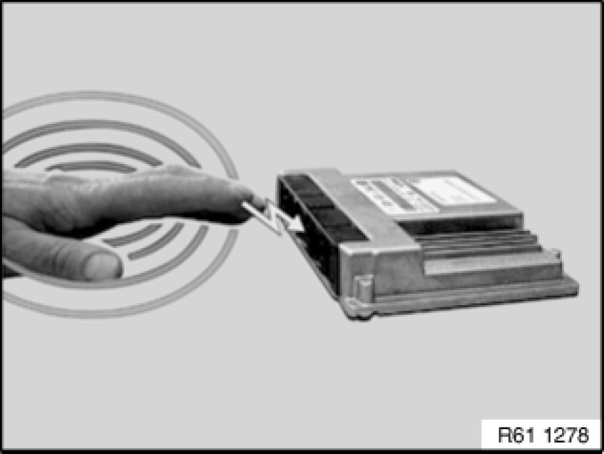
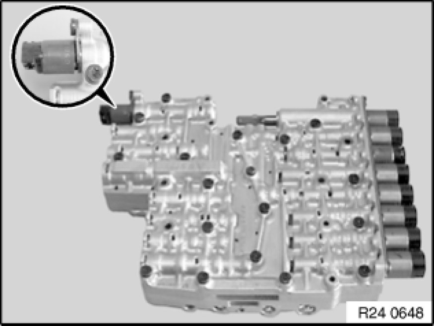
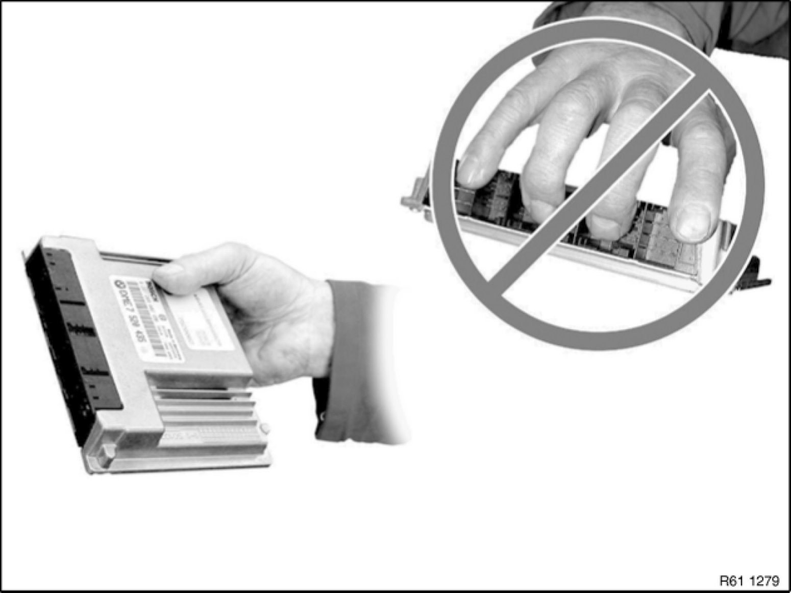
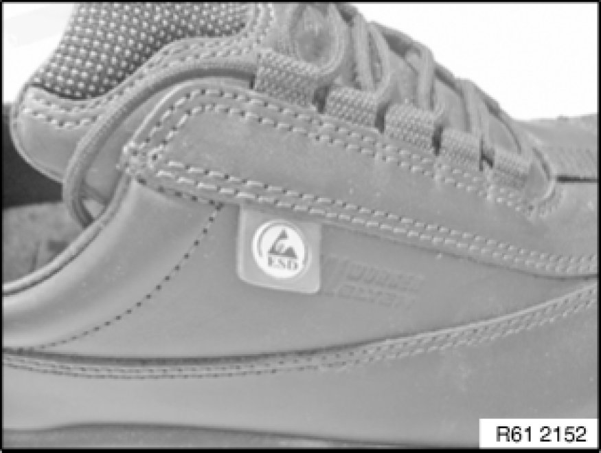

61 35 ... Notes on ESD Protection (Electro Static Discharge)
61 35 ... - Notes on ESD protection (Electro Static Discharge)

Special tools required:
- 12 7 060 12 7 060 Antistatic Mat (ESD)

Note:
Electrical components which are particularly sensitive to electrostatic discharge (electronic control units, sensors, etc.) are marked with the ESD warning symbol.
E-Electro
S-Static
D-Discharge

Important!
Read and comply without fail with the notes on this subject from Service Information 2 06 04 128.

Statically charged persons can discharge by touching electrical components.
Note:
Humans can only detect a discharge starting from a level of approx. 3000 V.
The danger threshold for electrical components already starts from a level of approx. 100 V.

Example:
Mechatronic control unit.

Important!
Do not touch pins or multi-pin connectors directly!
Touch electrical components by their housings only.
Important!
To prevent electrical components from being damaged or destroyed by electrostatic discharge, it is absolutely essential to comply with the following instructions:
- When replacing electrical components, leave the replacement components in their original packaging until immediately before they are to be installed
- If necessary, always return a removed component in its original packaging (always pack the component away immediately)
- Read and comply with user information on using the associated special tool 12 7 060 12 7 060 Antistatic Mat (ESD)

Personal protective equipment:
Electrically conducting clothing (high wool content, antistatic shoes required).
These can primarily be identified by the logo on the side.